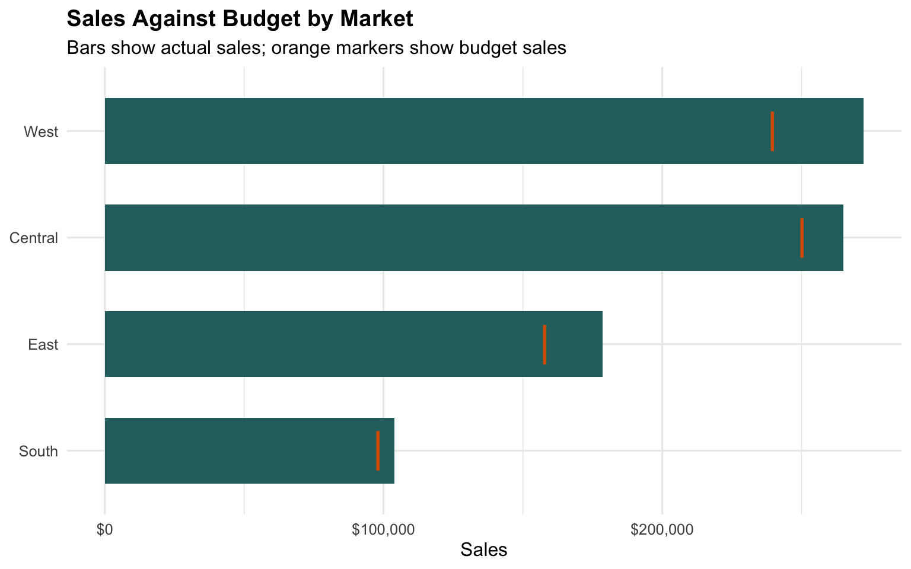
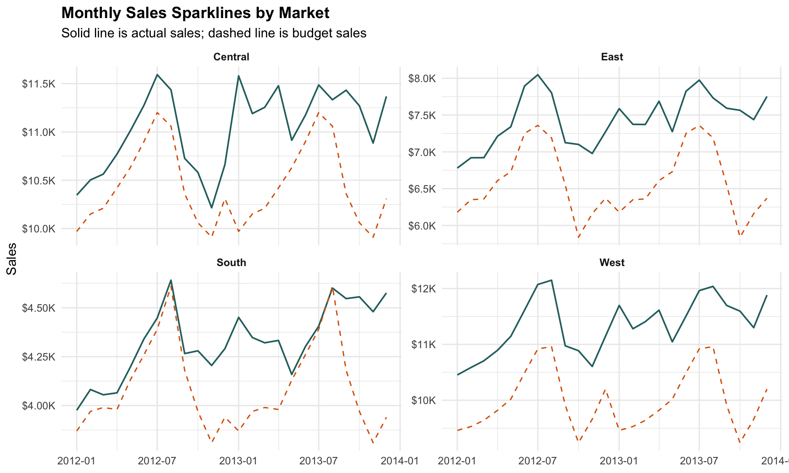
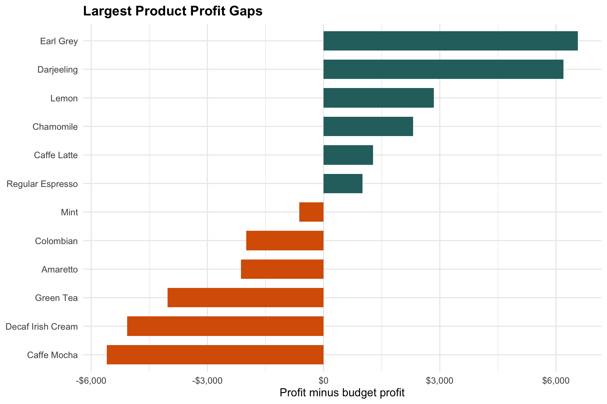

if (!requireNamespace("pacman", quietly = TRUE)) {
install.packages("pacman", repos = "https://cloud.r-project.org")
}
pacman::p_load(
tidyverse,
lubridate,
scales,
gt,
reactable,
htmltools,
knitr
)Hands-on_Ex10
1 Information Dashboard Design: R methods
1.1 Overview
A dashboard brings several compact views together so readers can scan status, compare performance and find exceptions quickly. In R, dashboard-style outputs can be built from data summaries, small plots, formatted tables and interactive tables.
In this hands-on exercise, the Coffee Chain dataset is used to create a small sales performance report. The supplied Microsoft Access database is kept in the data folder, but the exercise uses the prepared RDS version to avoid driver issues on macOS.
By the end of this exercise, we should be able to:
- import a prepared dashboard dataset;
- create performance summaries against budget;
- build bullet-chart style comparisons in
ggplot2; - draw small multiple sparklines;
- create a static report table with
gt; - create an interactive table with
reactable.
1.2 Installing and launching R packages
1.3 Importing Microsoft Access database
1.3.1 The data set
The exercise folder contains two files:
Coffee Chain.mdb, the original Microsoft Access database;CoffeeChain.rds, a prepared R object with the same working data used for this reproducible page.
Using the RDS file keeps the page portable because importing .mdb files on macOS can depend on external database drivers.
coffee_path <- "data/rds/CoffeeChain.rds"
if (!file.exists(coffee_path)) {
stop("CoffeeChain.rds is missing from data/rds.")
}
coffee <- readRDS(coffee_path) %>%
mutate(
Date = as.Date(Date),
month = floor_date(Date, "month"),
profit_gap = Profit - `Budget Profit`,
sales_gap = Sales - `Budget Sales`,
margin_gap = Margin - `Budget Margin`
)
glimpse(coffee)Rows: 4,248
Columns: 23
$ Profit <dbl> 94, 68, 101, 30, 54, 53, 99, 0, 33, 17, 36, 111, 87, …
$ Margin <dbl> 130, 107, 139, 56, 80, 108, 171, 87, 80, 72, 76, 201,…
$ Sales <dbl> 219, 190, 234, 100, 134, 180, 341, 150, 140, 130, 140…
$ COGS <dbl> 89, 83, 95, 44, 54, 72, 170, 63, 60, 58, 64, 144, 95,…
$ `Total Expenses` <dbl> 36, 39, 38, 26, 26, 55, 72, 87, 47, 55, 40, 90, 52, 1…
$ Marketing <dbl> 24, 27, 26, 14, 15, 23, 47, 57, 19, 22, 19, 47, 30, 7…
$ Inventory <dbl> 777, 623, 821, 623, 456, 558, 1091, 435, 336, 338, 96…
$ `Budget Profit` <dbl> 100, 80, 110, 30, 70, 80, 110, 20, 40, 20, 40, 130, 1…
$ `Budget Margin` <dbl> 130, 110, 140, 50, 90, 130, 160, 80, 70, 70, 70, 210,…
$ `Budget Sales` <dbl> 220, 190, 240, 80, 150, 210, 300, 130, 120, 110, 120,…
$ `Budget COGS` <dbl> 90, 80, 100, 30, 60, 80, 140, 50, 50, 40, 50, 150, 10…
$ Date <date> 2012-01-01, 2012-01-01, 2012-01-01, 2012-01-01, 2012…
$ Market <chr> "Central", "Central", "Central", "Central", "Central"…
$ State <chr> "Colorado", "Colorado", "Colorado", "Colorado", "Colo…
$ `Area Code` <dbl> 719, 970, 970, 303, 303, 720, 970, 719, 970, 719, 303…
$ `Market Size` <chr> "Major Market", "Major Market", "Major Market", "Majo…
$ `Product Type` <chr> "Coffee", "Coffee", "Coffee", "Tea", "Espresso", "Esp…
$ Product <chr> "Amaretto", "Colombian", "Decaf Irish Cream", "Green …
$ Type <chr> "Regular", "Regular", "Decaf", "Regular", "Regular", …
$ month <date> 2012-01-01, 2012-01-01, 2012-01-01, 2012-01-01, 2012…
$ profit_gap <dbl> -6, -12, -9, 0, -16, -27, -11, -20, -7, -3, -4, -19, …
$ sales_gap <dbl> -1, 0, -6, 20, -16, -30, 41, 20, 20, 20, 20, -15, -6,…
$ margin_gap <dbl> 0, -3, -1, 6, -10, -22, 11, 7, 10, 2, 6, -9, -1, -58,…coffee %>%
head(8) %>%
knitr::kable(format = "html")| Profit | Margin | Sales | COGS | Total Expenses | Marketing | Inventory | Budget Profit | Budget Margin | Budget Sales | Budget COGS | Date | Market | State | Area Code | Market Size | Product Type | Product | Type | month | profit_gap | sales_gap | margin_gap |
|---|---|---|---|---|---|---|---|---|---|---|---|---|---|---|---|---|---|---|---|---|---|---|
| 94 | 130 | 219 | 89 | 36 | 24 | 777 | 100 | 130 | 220 | 90 | 2012-01-01 | Central | Colorado | 719 | Major Market | Coffee | Amaretto | Regular | 2012-01-01 | -6 | -1 | 0 |
| 68 | 107 | 190 | 83 | 39 | 27 | 623 | 80 | 110 | 190 | 80 | 2012-01-01 | Central | Colorado | 970 | Major Market | Coffee | Colombian | Regular | 2012-01-01 | -12 | 0 | -3 |
| 101 | 139 | 234 | 95 | 38 | 26 | 821 | 110 | 140 | 240 | 100 | 2012-01-01 | Central | Colorado | 970 | Major Market | Coffee | Decaf Irish Cream | Decaf | 2012-01-01 | -9 | -6 | -1 |
| 30 | 56 | 100 | 44 | 26 | 14 | 623 | 30 | 50 | 80 | 30 | 2012-01-01 | Central | Colorado | 303 | Major Market | Tea | Green Tea | Regular | 2012-01-01 | 0 | 20 | 6 |
| 54 | 80 | 134 | 54 | 26 | 15 | 456 | 70 | 90 | 150 | 60 | 2012-01-01 | Central | Colorado | 303 | Major Market | Espresso | Caffe Mocha | Regular | 2012-01-01 | -16 | -16 | -10 |
| 53 | 108 | 180 | 72 | 55 | 23 | 558 | 80 | 130 | 210 | 80 | 2012-01-01 | Central | Colorado | 720 | Major Market | Espresso | Decaf Espresso | Decaf | 2012-01-01 | -27 | -30 | -22 |
| 99 | 171 | 341 | 170 | 72 | 47 | 1091 | 110 | 160 | 300 | 140 | 2012-01-01 | Central | Colorado | 970 | Major Market | Herbal Tea | Chamomile | Decaf | 2012-01-01 | -11 | 41 | 11 |
| 0 | 87 | 150 | 63 | 87 | 57 | 435 | 20 | 80 | 130 | 50 | 2012-01-01 | Central | Colorado | 719 | Major Market | Herbal Tea | Lemon | Decaf | 2012-01-01 | -20 | 20 | 7 |
1.3.2 Data Preparation
The dashboard summaries compare actual sales and profit against budget by market.
market_summary <- coffee %>%
group_by(Market) %>%
summarise(
Sales = sum(Sales, na.rm = TRUE),
`Budget Sales` = sum(`Budget Sales`, na.rm = TRUE),
Profit = sum(Profit, na.rm = TRUE),
`Budget Profit` = sum(`Budget Profit`, na.rm = TRUE),
Margin = sum(Margin, na.rm = TRUE),
`Budget Margin` = sum(`Budget Margin`, na.rm = TRUE),
sales_gap = Sales - `Budget Sales`,
profit_gap = Profit - `Budget Profit`,
margin_gap = Margin - `Budget Margin`,
.groups = "drop"
) %>%
arrange(desc(Sales))
market_summary %>%
knitr::kable(format = "html")| Market | Sales | Budget Sales | Profit | Budget Profit | Margin | Budget Margin | sales_gap | profit_gap | margin_gap |
|---|---|---|---|---|---|---|---|---|---|
| West | 272264 | 239700 | 73996 | 74360 | 140052 | 131280 | 32564 | -364 | 8772 |
| Central | 265045 | 250360 | 93852 | 92580 | 146252 | 146140 | 14685 | 1272 | 112 |
| East | 178576 | 157900 | 59217 | 56780 | 98942 | 93400 | 20676 | 2437 | 5542 |
| South | 103926 | 98200 | 32478 | 35040 | 57792 | 57460 | 5726 | -2562 | 332 |
1.3.3 Bullet chart in ggplot2
A bullet chart compares actual performance against a target in a compact form. Here, the bar shows actual sales and the vertical marker shows budget sales.
ggplot(market_summary, aes(y = fct_reorder(Market, Sales))) +
geom_col(aes(x = Sales), fill = "#2A6F6F", width = 0.62) +
geom_point(aes(x = `Budget Sales`), shape = 124, size = 9, colour = "#D95F02") +
scale_x_continuous(labels = dollar) +
labs(
title = "Sales Against Budget by Market",
subtitle = "Bars show actual sales; orange markers show budget sales",
x = "Sales",
y = NULL
) +
theme_minimal(base_size = 12) +
theme(plot.title = element_text(face = "bold"))
1.4 Plotting sparklines using ggplot2
1.4.1 Preparing the data
monthly_market <- coffee %>%
group_by(Market, month) %>%
summarise(
Sales = sum(Sales, na.rm = TRUE),
`Budget Sales` = sum(`Budget Sales`, na.rm = TRUE),
Profit = sum(Profit, na.rm = TRUE),
.groups = "drop"
)1.4.2 Sparklines in ggplot2
Small multiple line charts act like dashboard sparklines. They preserve the trend for each market while using very little visual space.
ggplot(monthly_market, aes(month, Sales)) +
geom_line(colour = "#2A6F6F", linewidth = 0.7) +
geom_line(aes(y = `Budget Sales`), colour = "#D95F02", linetype = "dashed", linewidth = 0.55) +
facet_wrap(~Market, scales = "free_y") +
scale_y_continuous(labels = dollar_format(scale_cut = cut_short_scale())) +
labs(
title = "Monthly Sales Sparklines by Market",
subtitle = "Solid line is actual sales; dashed line is budget sales",
x = NULL,
y = "Sales"
) +
theme_minimal(base_size = 12) +
theme(
plot.title = element_text(face = "bold"),
strip.text = element_text(face = "bold")
)
1.5 Static Information Dashboard Design: gt methods
The gt package is used to create a compact market performance table. Colour is applied to the gap columns so positive and negative performance can be scanned quickly.
gt_market <- market_summary %>%
gt() %>%
tab_header(
title = "Coffee Chain Market Performance",
subtitle = "Actual performance compared with budget"
) %>%
fmt_currency(
columns = c(Sales, `Budget Sales`, Profit, `Budget Profit`, Margin, `Budget Margin`, sales_gap, profit_gap, margin_gap),
currency = "USD",
decimals = 0
) %>%
data_color(
columns = c(sales_gap, profit_gap, margin_gap),
palette = c("#D95F02", "white", "#2A6F6F"),
domain = NULL
) %>%
tab_style(
style = cell_text(weight = "bold"),
locations = cells_column_labels(everything())
)
gt_market| Coffee Chain Market Performance | |||||||||
| Actual performance compared with budget | |||||||||
| Market | Sales | Budget Sales | Profit | Budget Profit | Margin | Budget Margin | sales_gap | profit_gap | margin_gap |
|---|---|---|---|---|---|---|---|---|---|
| West | $272,264 | $239,700 | $73,996 | $74,360 | $140,052 | $131,280 | $32,564 | −$364 | $8,772 |
| Central | $265,045 | $250,360 | $93,852 | $92,580 | $146,252 | $146,140 | $14,685 | $1,272 | $112 |
| East | $178,576 | $157,900 | $59,217 | $56,780 | $98,942 | $93,400 | $20,676 | $2,437 | $5,542 |
| South | $103,926 | $98,200 | $32,478 | $35,040 | $57,792 | $57,460 | $5,726 | −$2,562 | $332 |
1.6 Interactive Information Dashboard Design: reactable methods
Interactive tables are useful when readers need sorting, filtering and compact comparison. The table below keeps the market-level view but allows sorting by any metric.
sales_palette <- col_numeric(
palette = c("#F2F0E6", "#2A6F6F"),
domain = market_summary$Sales
)
gap_style <- function(value) {
if (is.na(value)) {
return(list())
}
if (value >= 0) {
list(color = "#2A6F6F", fontWeight = "600")
} else {
list(color = "#D95F02", fontWeight = "600")
}
}reactable(
market_summary,
searchable = TRUE,
defaultPageSize = 6,
columns = list(
Sales = colDef(
format = colFormat(currency = "USD", separators = TRUE, digits = 0),
style = function(value) {
list(background = sales_palette(value))
}
),
`Budget Sales` = colDef(format = colFormat(currency = "USD", separators = TRUE, digits = 0)),
Profit = colDef(format = colFormat(currency = "USD", separators = TRUE, digits = 0)),
`Budget Profit` = colDef(format = colFormat(currency = "USD", separators = TRUE, digits = 0)),
Margin = colDef(format = colFormat(currency = "USD", separators = TRUE, digits = 0)),
`Budget Margin` = colDef(format = colFormat(currency = "USD", separators = TRUE, digits = 0)),
sales_gap = colDef(
name = "Sales Gap",
format = colFormat(currency = "USD", separators = TRUE, digits = 0),
style = gap_style
),
profit_gap = colDef(
name = "Profit Gap",
format = colFormat(currency = "USD", separators = TRUE, digits = 0),
style = gap_style
),
margin_gap = colDef(
name = "Margin Gap",
format = colFormat(currency = "USD", separators = TRUE, digits = 0),
style = gap_style
)
)
)1.7 My Extension: Product performance view
The dashboard can also be viewed by product. This extension identifies the products with the largest profit gap.
product_summary <- coffee %>%
group_by(`Product Type`, Product) %>%
summarise(
Sales = sum(Sales, na.rm = TRUE),
Profit = sum(Profit, na.rm = TRUE),
`Budget Profit` = sum(`Budget Profit`, na.rm = TRUE),
profit_gap = Profit - `Budget Profit`,
.groups = "drop"
) %>%
arrange(desc(profit_gap))product_summary %>%
slice_max(abs(profit_gap), n = 12, with_ties = FALSE) %>%
mutate(Product = fct_reorder(Product, profit_gap)) %>%
ggplot(aes(profit_gap, Product, fill = profit_gap >= 0)) +
geom_col(width = 0.68) +
scale_x_continuous(labels = dollar) +
scale_fill_manual(values = c("TRUE" = "#2A6F6F", "FALSE" = "#D95F02"), guide = "none") +
labs(
title = "Largest Product Profit Gaps",
x = "Profit minus budget profit",
y = NULL
) +
theme_minimal(base_size = 12) +
theme(plot.title = element_text(face = "bold"))
1.8 Key Takeaways
- Dashboard views should combine summary, comparison and exception-finding.
- Bullet charts are compact ways to compare actual values against targets.
- Sparklines are useful when trends need to fit into a small space.
- Static
gttables are good for presentation, whilereactabletables support exploration. - A prepared RDS file is a practical reproducible alternative when Access drivers are unavailable.
1.9 References
- R4VA chapter: https://r4va.netlify.app/chap31